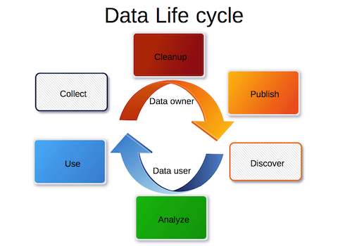
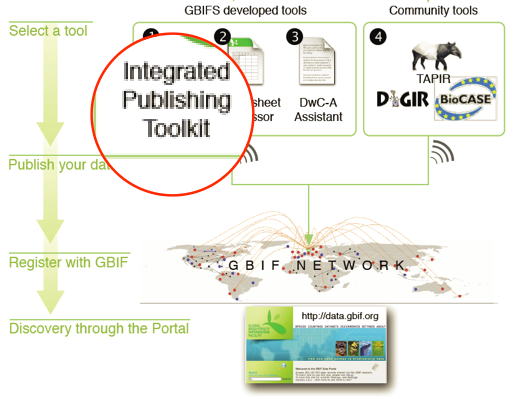
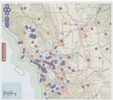
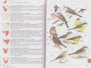
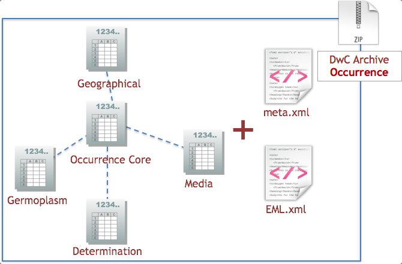
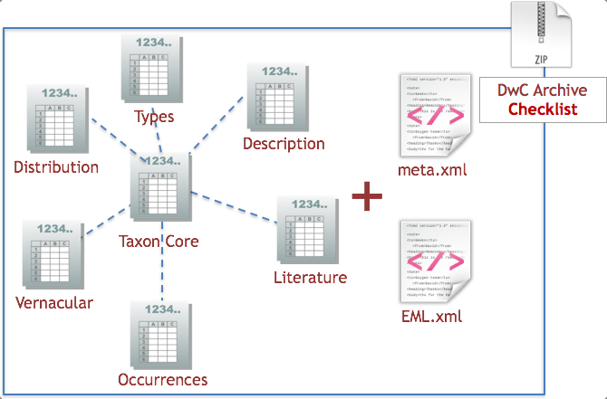
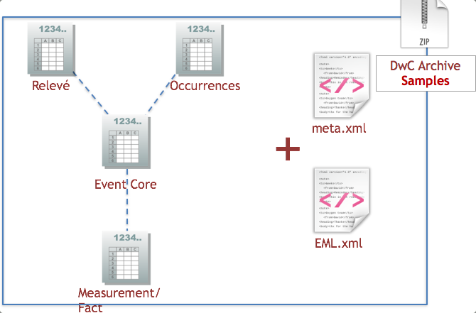
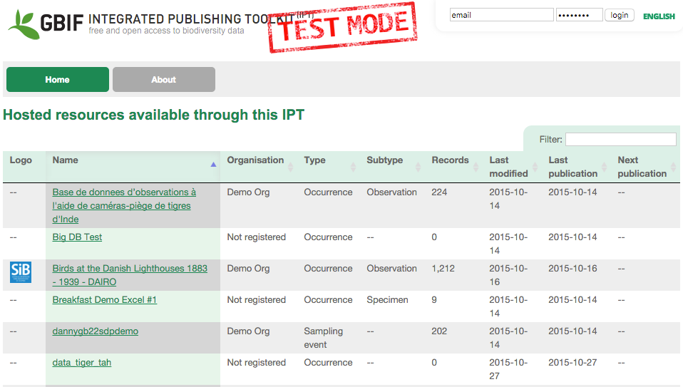

IPT - DarwinCore
Data cleaning/publishing Workshop
9th November 2015
André Heughebaert
Belgian Biodiversity Platform

Summary
Data Publishing

Pre-requisites
- Data owners are known & willing to publish
- Data is available in electronic format
- Data quality is acceptable
- Data documentation(=metadata)
- Data licence
Data Publishing

DwC
The Darwin Core is body of standards. It includes a glossary of terms (in other contexts these might be called properties, elements, fields, columns, attributes, or concepts) intended to facilitate the sharing of information about biological diversity by providing reference definitions, examples, and commentaries.
Categories of Terms
- Record-level
- Occurrence
- Event
- Location
- Identification
- Taxon
- ...
Occurrence Terms
Definition: The age class or life stage of the biological individual(s) at the time the Occurrence was recorded. Recommended best practice is to use a controlled vocabulary.
Examples: "egg", "eft", "juvenile", "adult", "2 adults 4 juveniles". For discussion see http://terms.tdwg.org/wiki/dwc:lifeStage
DwC-A
Darwin Core Archive (DwC-A) is a Biodiversity informatics data standard that makes use of the Darwin Core terms to produce a single, self-contained dataset for species occurrence, checklist or sample based data.

Integrated Publishing Toolkit
IPT is a free, open sourced, web-based application that:
- Map your data to DwC Terms
- Describe your dataset
- Zip your Data+Metadata into DarwinCore Archive
- Publish your data on the internet
- Register your dataset into GBIF registry
- Administer users, their roles and priviledges
Types of Datasets
|  | Occurrence |
|  | Checklist |
| Sample based | |
| (Metadata only) |
Occurrences Data

Checklist Data

Sample Based Data

MetaData Only

Demo
- Create a new resource
- Import data files
- Map fields to DarwinCore terms
- Describe the dataset (Metadata)
- Publish on the net & Register to GBIF
Hands-on
Tools you need:
Questions?

Made with reveal.js - HTML Presentations made easy